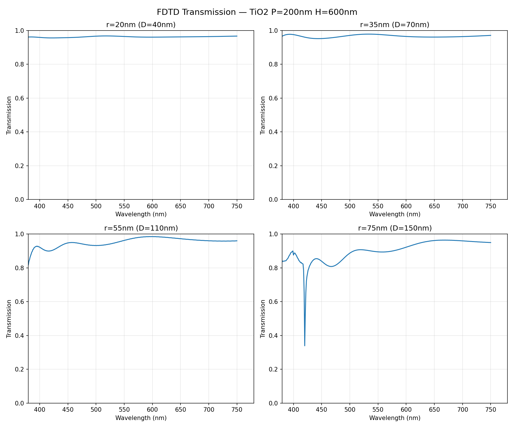
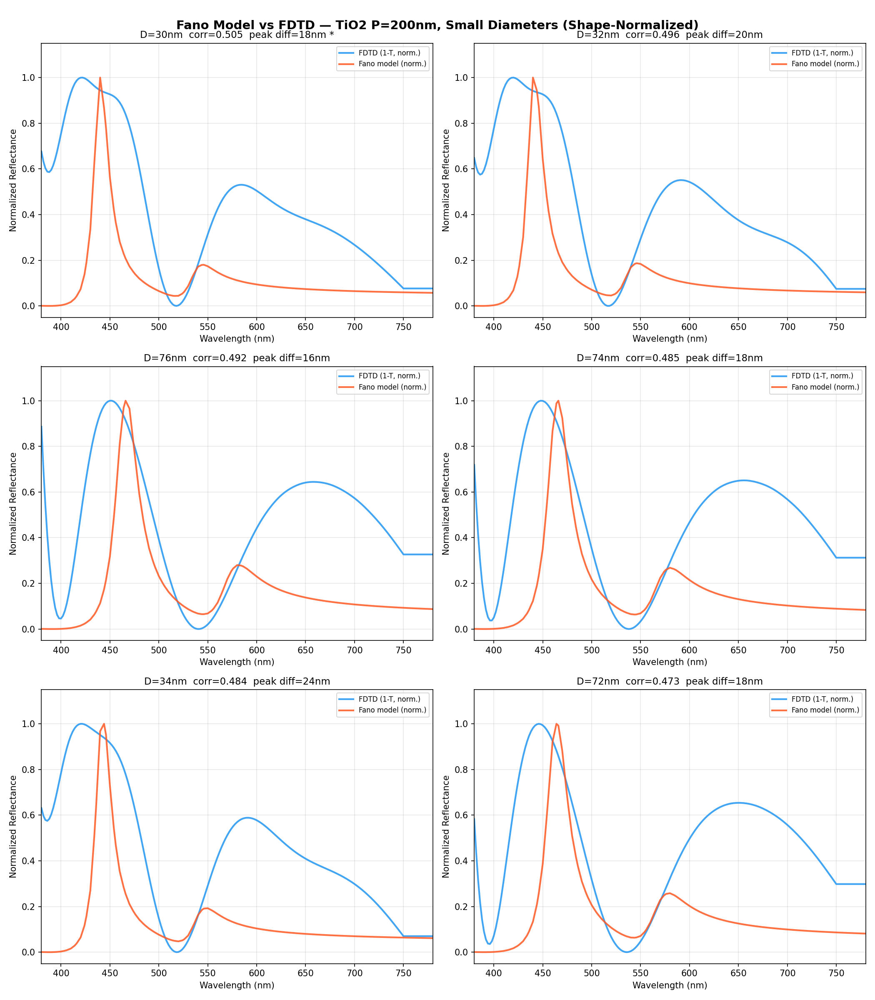
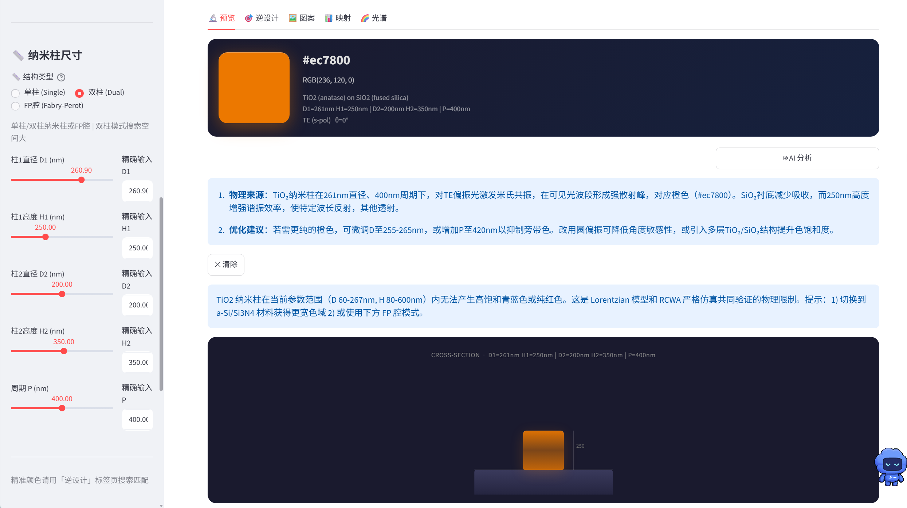
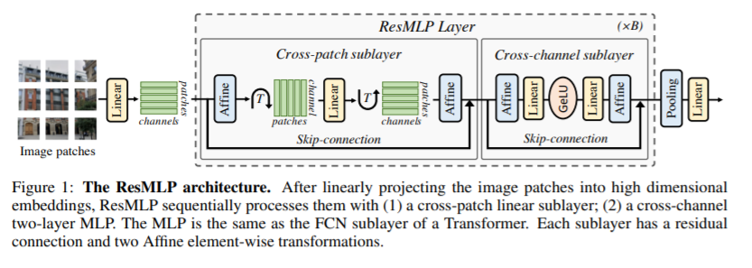
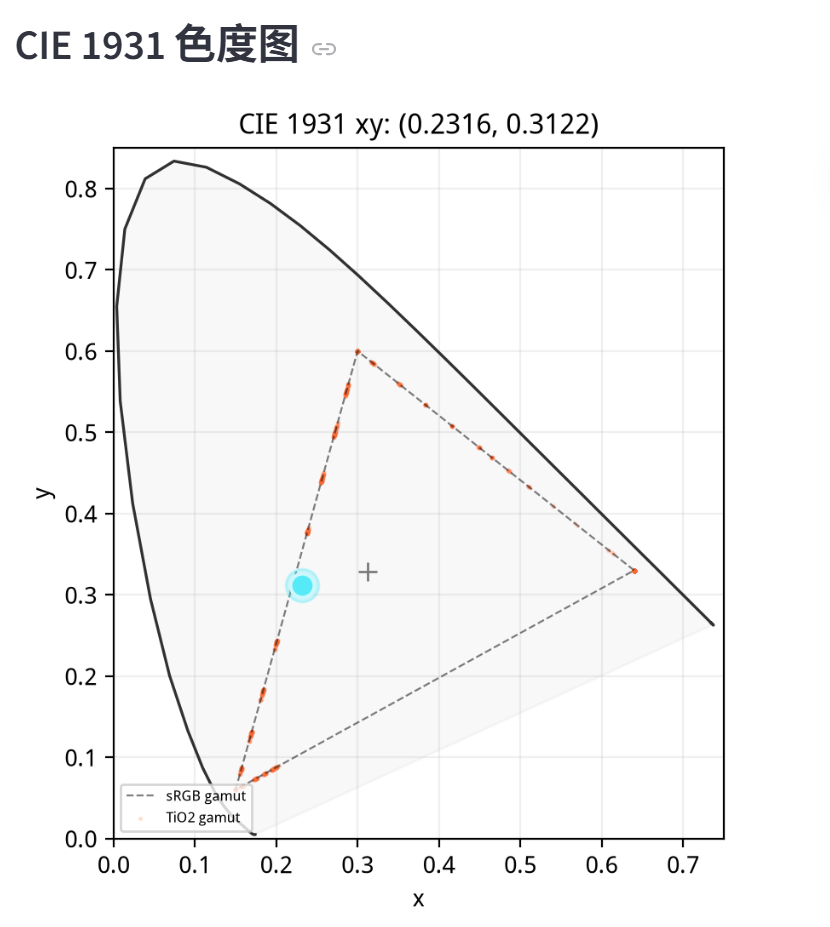

以超表面结构色为验证场景的 AI 算法与可视化工作流，连接模型预测、候选筛选、光谱表达和结构参数导出。
将目标颜色、模型候选、光谱/色度表达和结构参数导出组织成面向验证场景的 AI 工作流。
基于机器学习代理模型与候选筛选，从目标颜色进入超表面结构参数探索，保留模型适用域和结果边界。
支持在已注册模型域内探索周期、高度、直径和材料等参数，并显示结果适用边界。
支持结构预览、反射光谱和 CIE 1931 色度表达，帮助用户理解参数变化与候选结果。
从设计需求到候选结构，系统提供可追溯的输入、路由、表达和导出流程。
输入目标颜色（RGB/HEX）或直接调节结构参数；系统同步展示当前路线的光谱和色度表达。
模型快速生成候选结构，并结合光谱与色度表达进行可解释筛选；结果用于早期设计和后续复核，不宣称无边界最优。
查看结构色效果、反射光谱与色度表达，导出结构参数文件和结果 metadata。
基于本系统开展的结构色设计与仿真结果展示，覆盖可见光结构色探索和图案级参数映射。

历史探索示意图，用于说明光谱与色度表达；当前可复核结果以交互台的已审核参考入口为准。

历史探索示意图，展示结构参数到颜色表达的像素级映射；具体物理性能需经独立高保真仿真或实验复核。
本系统的理论基础与方法论参考了以下前沿文献，涵盖介质纳米光学、结构色设计及深度学习逆向设计等方向。
主入口 app.py 提供单柱、双柱与 FP 腔路线的光谱/色度查看、逆设计和结果导出；TiO₂/SiO₂/air 单柱支持已审核 RCWA 参考记录的精确复核。
参考库共绑定 21,083 个唯一几何，限定 TM (p-pol)、0°、nG=151、Nxy=256。参考对照用于展示和前向复核，不等于代理模型全域精度、收敛证明或实验验证。
本地使用：启动主交互入口 app.py。在线服务尚未发布。
网站其他区域包含历史功能探索和示意图；当前可用功能以交互台为准。
基于 Streamlit 构建的交互式 Web 界面，将结构色设计流程封装为可复核的操作面板。

左侧滑块调节纳米柱周期、占空比、高度等关键参数，右侧更新结构色效果与反射光谱预览。
输入目标CIE色坐标或RGB值，模型在当前适用域内生成候选纳米结构参数，减少早期手动试错。
查看当前路线的光谱响应、色度映射和结果来源；全波与实验复核另行执行。
支持导出结构参数文件（JSON/CSV）、PNG 色板和结果 metadata，便于后续复核。
系统采用分层架构设计，连接用户交互、模型表达、候选筛选与后续物理复核。
基于 Python Streamlit 构建的响应式 Web 界面，提供参数滑块、色板选择器和结果预览，降低用户使用门槛。
核心学习模块用于正向光谱/颜色预测与候选搜索，界面同步显示模型版本、来源和适用边界。
统一展示光谱、CIE 1931 和结构参数来源；全波与实验复核另行执行。
组织结构参数、光谱和结果 metadata，支持重复查询、复核和结果记录。
通过 AI 模型辅助候选搜索和颜色表达，减少早期设计中的重复试错；工程效率以实际部署条件为准。
基于学习模型的光谱/颜色预测与候选搜索，将颜色需求、结构参数和可视化复核连接成统一流程。

根据结构类型和材料配置选择当前可用的预测或解析路线，并将来源同步到结果区。
由同一路线的光谱计算 RGB、CIE 1931 和 ΔE2000，便于用户核对颜色表达。
围绕目标颜色生成可继续筛选的结构参数候选；结构可制造性和物理量仍需经统一高保真仿真或实验复核。
基于 CIE 1931 标准色度空间展示模型路线内的结果分布与目标坐标比对；物理准确性需经统一高保真仿真或实验复核。

系统将设计结果映射至 CIE 1931 标准色度图，并在当前模型路线内与目标色坐标进行比对；具体数值需以最终版本测试报告为准。
在线展示页连接同域交互台；代码仓库、系统文档和离线包已统一整理。
在线交互台、代码仓库、系统文档和离线包均指向当前项目版本
扫码打开在线交互台